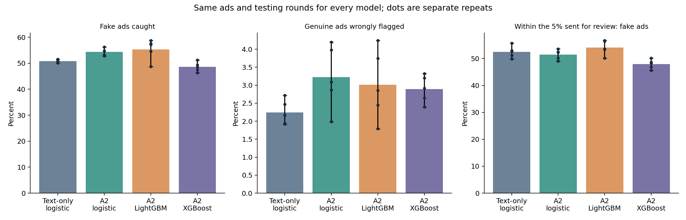
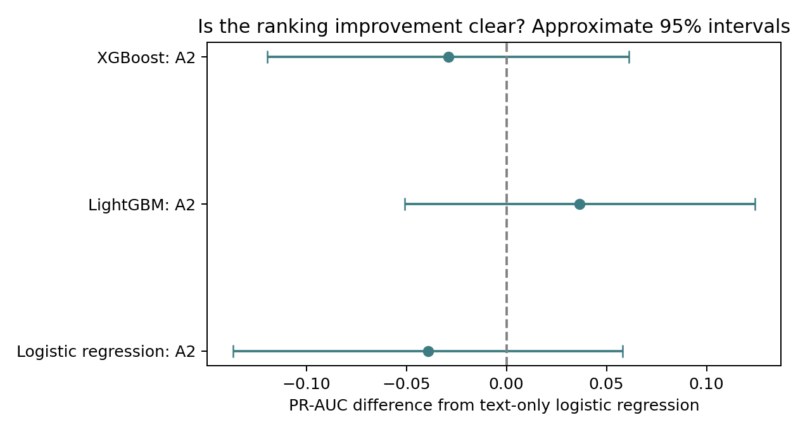

Completed 5 repeats of 5 grouped tests: 25 scoring rounds per model. Each repeat scores the same 14,439 ads once. Related ads stay together. Settings and cutoffs are chosen using 3 smaller grouped splits of training ads only. The reserved final test file was never opened.
Counts below are averages across repeats. The same ads are reused across repeats, so these are not extra independent datasets. The ordinary flags use each round’s training-chosen cutoff. The 5% review columns instead take the highest scores in each scoring batch; they are a separate review policy.
| Fake ads caught (of 693) | Genuine ads wrongly flagged (of 13746) | Flags that are fake | Fake ads found in 5% review | 5% review: flags that are fake | Mean PR-AUC | |
|---|---|---|---|---|---|---|
| Logistic regression: text only | 352.0 | 308.4 | 53.5% | 377.6 | 52.4% | 0.595 |
| Logistic regression: A2 | 376.8 | 443.2 | 46.8% | 370.8 | 51.5% | 0.555 |
| LightGBM: A2 | 383.6 | 414.4 | 49.1% | 389.0 | 54.0% | 0.631 |
| XGBoost: A2 | 336.6 | 398.0 | 46.0% | 344.8 | 47.9% | 0.566 |
The text-only reference keeps the existing 30,000-term vocabulary limit. All three A2 models use the same 2,000-term limit plus the same structured and writing-style features, to keep tree training practical. This compares complete pipelines; use A2 logistic regression for a comparison with identical inputs to the tree models.

Positive PR-AUC differences mean better ranking than the text-only reference. An interval crossing zero means these tests do not clearly establish a difference. Intervals are approximate and allow for overlap in training data; they are exploratory, not adjusted for all comparisons. Error bars in the chart show the range across repeats, not confidence intervals.
| model | mean_diff | low | high | share_folds_a_better | conclusion |
|---|---|---|---|---|---|
| logreg_a2 | -0.039 | -0.137 | 0.058 | 0.280 | Difference remains uncertain |
| lightgbm_a2 | 0.037 | -0.051 | 0.124 | 0.680 | Difference remains uncertain |
| xgboost_a2 | -0.029 | -0.119 | 0.061 | 0.400 | Difference remains uncertain |

| fraud_caught | fraud_missed | genuine_flagged | genuine_passed | review_count | review_fraud_caught | review_genuine_flagged | repeat | fraud_total | genuine_total | recall | false_positive_rate | precision | review_precision | review_recall | mean_fold_pr_auc | model |
|---|---|---|---|---|---|---|---|---|---|---|---|---|---|---|---|---|
| 347 | 346 | 339 | 13407 | 720 | 379 | 341 | 0 | 693 | 13746 | 0.501 | 0.025 | 0.506 | 0.526 | 0.547 | 0.593 | logreg_tfidf |
| 354 | 339 | 374 | 13372 | 720 | 401 | 319 | 1 | 693 | 13746 | 0.511 | 0.027 | 0.486 | 0.557 | 0.579 | 0.628 | logreg_tfidf |
| 349 | 344 | 298 | 13448 | 720 | 359 | 361 | 2 | 693 | 13746 | 0.504 | 0.022 | 0.539 | 0.499 | 0.518 | 0.575 | logreg_tfidf |
| 353 | 340 | 264 | 13482 | 720 | 381 | 339 | 3 | 693 | 13746 | 0.509 | 0.019 | 0.572 | 0.529 | 0.550 | 0.608 | logreg_tfidf |
| 357 | 336 | 267 | 13479 | 720 | 368 | 352 | 4 | 693 | 13746 | 0.515 | 0.019 | 0.572 | 0.511 | 0.531 | 0.568 | logreg_tfidf |
| 369 | 324 | 547 | 13199 | 720 | 376 | 344 | 0 | 693 | 13746 | 0.532 | 0.040 | 0.403 | 0.522 | 0.543 | 0.556 | logreg_a2 |
| 390 | 303 | 577 | 13169 | 720 | 378 | 342 | 1 | 693 | 13746 | 0.563 | 0.042 | 0.403 | 0.525 | 0.545 | 0.580 | logreg_a2 |
| 380 | 313 | 425 | 13321 | 720 | 361 | 359 | 2 | 693 | 13746 | 0.548 | 0.031 | 0.472 | 0.501 | 0.521 | 0.527 | logreg_a2 |
| 379 | 314 | 273 | 13473 | 720 | 386 | 334 | 3 | 693 | 13746 | 0.547 | 0.020 | 0.581 | 0.536 | 0.557 | 0.568 | logreg_a2 |
| 366 | 327 | 394 | 13352 | 720 | 353 | 367 | 4 | 693 | 13746 | 0.528 | 0.029 | 0.482 | 0.490 | 0.509 | 0.545 | logreg_a2 |
| 378 | 315 | 515 | 13231 | 720 | 384 | 336 | 0 | 693 | 13746 | 0.545 | 0.037 | 0.423 | 0.533 | 0.554 | 0.616 | lightgbm_a2 |
| 396 | 297 | 246 | 13500 | 720 | 406 | 314 | 1 | 693 | 13746 | 0.571 | 0.018 | 0.617 | 0.564 | 0.586 | 0.671 | lightgbm_a2 |
| 338 | 355 | 336 | 13410 | 720 | 361 | 359 | 2 | 693 | 13746 | 0.488 | 0.024 | 0.501 | 0.501 | 0.521 | 0.593 | lightgbm_a2 |
| 407 | 286 | 392 | 13354 | 720 | 386 | 334 | 3 | 693 | 13746 | 0.587 | 0.029 | 0.509 | 0.536 | 0.557 | 0.632 | lightgbm_a2 |
| 399 | 294 | 583 | 13163 | 720 | 408 | 312 | 4 | 693 | 13746 | 0.576 | 0.042 | 0.406 | 0.567 | 0.589 | 0.644 | lightgbm_a2 |
| 329 | 364 | 363 | 13383 | 720 | 338 | 382 | 0 | 693 | 13746 | 0.475 | 0.026 | 0.475 | 0.469 | 0.488 | 0.551 | xgboost_a2 |
| 336 | 357 | 329 | 13417 | 720 | 347 | 373 | 1 | 693 | 13746 | 0.485 | 0.024 | 0.505 | 0.482 | 0.501 | 0.591 | xgboost_a2 |
| 321 | 372 | 440 | 13306 | 720 | 328 | 392 | 2 | 693 | 13746 | 0.463 | 0.032 | 0.422 | 0.456 | 0.473 | 0.546 | xgboost_a2 |
| 355 | 338 | 401 | 13345 | 720 | 350 | 370 | 3 | 693 | 13746 | 0.512 | 0.029 | 0.470 | 0.486 | 0.505 | 0.572 | xgboost_a2 |
| 342 | 351 | 457 | 13289 | 720 | 361 | 359 | 4 | 693 | 13746 | 0.494 | 0.033 | 0.428 | 0.501 | 0.521 | 0.567 | xgboost_a2 |
Detailed files: comparison_summary.csv, results_by_repeat.csv, paired_differences.csv, repeat_differences_vs_baseline.csv, each model’s fold scores and selected settings, and run_plan.json. Row-level predictions remain in the ignored processed-data folder. No final model has been selected or tested.